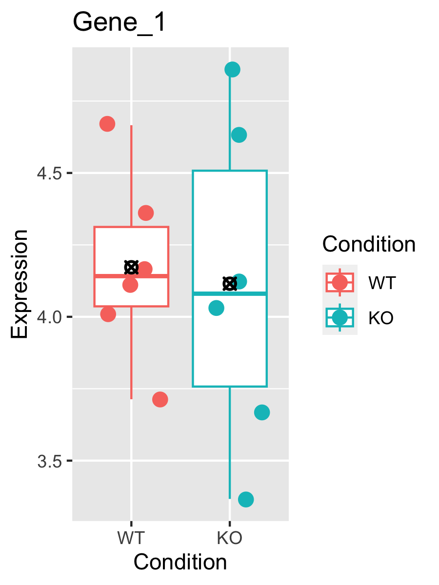
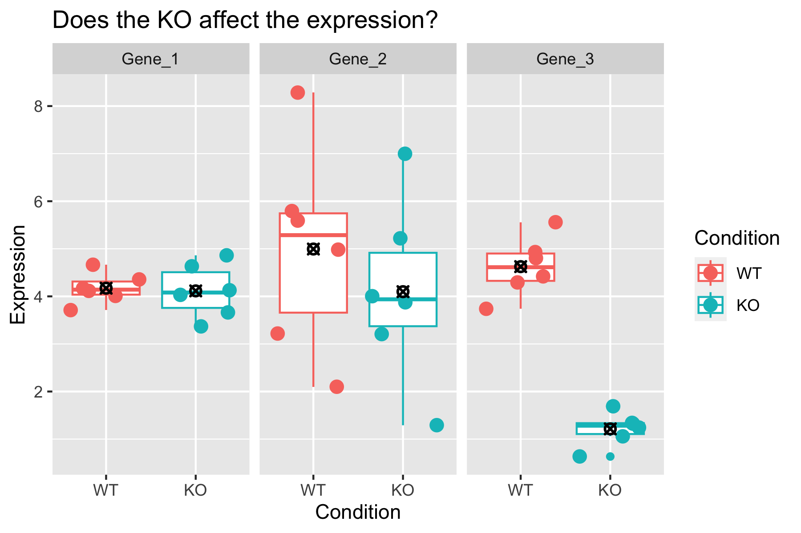

Objectives
- Generate tables of DE results
- Understand what a p-value represents.
- Understand multiple hypothesis correction application and
importance
Differential Expression Workflow
Now we test for differential expression between our groups of
interest and return a table of results.

Testing for DE
Before showing the code for generating differential expression
results, let’s walk through some toy data and discuss our intuition, its
limitations, and what we can do to formalize our thought around
determining if a gene is differentially expressed.
Let’s get a sense for our intuition by looking at expression boxplots
for a few “genes” where we’ve made up the data. In each plot, we are
comparing the expression levels (on the y-axis) for samples (each point)
representing a WT (red) and KO (teal) condition. The boxplot shows the
25% - 75% distribution, along with outliers, with a bar representing the
median value, and a black-crossed-point representing the mean.
For the first example, we ask: Does the KO affect the expression of
the gene?
It seems pretty clear that there is a large difference between the
means of the two groups, and within-group spread is quite low. So the
answer to the question is likely “Yes”.
Consider a second example:

Here there isn’t a large difference between the means of the two
groups, and there is quite a bit of spread within-group. The answer here
is likely “No”.
Finally, consider a third example:
The means are not so close to each other in this example, though
there is still quite a bit of spread. This is example is perhaps less
clear.
Looking at all three of the hypothetical genes together, we see them
in relation to one another and how they span the range from No, to
Maybe?, to Definitely.

Consider needing to make this decision for 20,000 genes. Even if all
the genes behaved in a clear-cut manner, that would take a lot of time
(or a lot of graduate students). But there are probably lots of Gene 2s
out there.
We need a formal, reproducible, way to make this
decision!
There are many tools to model expression between the groups, we have
chosen to focus on DESeq2, but know that a tool like edgeR is out there.
Both tools are statistically sound approachees to modeling and testing
for differential expression.
With any statistical test, we need to clearly state what we are
testing. For the toy data above, we assume that the KO doesn’t affect
the expression of any particular gene. Statisticians would call this the
“null hypothesis”. For the mouse data we’re working with, the null
hypothesis is that “there is no difference between the expression of the
iron deficient (minus) and normal (plus) mice”. The alternative is that
there is a difference.
For each gene, DESeq2 computes a “Wald statistic” which is a single
number encapsulating the difference in the means and the spread of the
groups. However, this number alone doesn’t tell us how to decide if a
gene is differentially expressed. We need a second
number to give us an idea of how extreme that Wald statistic is among
the distribution of Wald statistics, this is the “p-value”.
Imagine shuffling the KO and WT labels and recomputing the statistic
over and over again. You’d get a distribution of statistics that would
look similar to a normal curve. The p-value essentially tells you how
likely you are to have seen the statistic you see by chance. So when we
set a p-value = 0.05 as a threshold, we’re saying, “there is a 5% I’d
see something this extreme by chance”. So the evidence is
strong, but not ironclad.
Generating DE Results
We can check what comparisons were automatically generated during
fitting using the resultsNames() function.
resultsNames(dds)
[1] "Intercept" "condition_plus_vs_minus"
There is only the one comparison in the results, so we will refer to
it in the name parameter of the results()
function, and assign the result as an object.
results_plus_vs_minus = results(dds, name = 'condition_plus_vs_minus')
head(results_plus_vs_minus)
log2 fold change (MLE): condition plus vs minus
Wald test p-value: condition plus vs minus
DataFrame with 6 rows and 6 columns
baseMean log2FoldChange lfcSE stat pvalue
<numeric> <numeric> <numeric> <numeric> <numeric>
ENSMUSG00000000001 1489.83039 -0.297760 0.210310 -1.415813 0.156830
ENSMUSG00000000028 1748.93544 -0.226421 0.176795 -1.280693 0.200302
ENSMUSG00000000031 2151.87715 -0.457628 0.764579 -0.598537 0.549482
ENSMUSG00000000037 24.91672 -0.579128 0.561259 -1.031837 0.302148
ENSMUSG00000000049 7.78377 0.899490 1.553062 0.579172 0.562473
ENSMUSG00000000056 19653.54030 0.174048 0.203529 0.855154 0.392466
padj
<numeric>
ENSMUSG00000000001 0.868577
ENSMUSG00000000028 0.902896
ENSMUSG00000000031 0.995389
ENSMUSG00000000037 0.950617
ENSMUSG00000000049 0.998037
ENSMUSG00000000056 0.982477
In the results table, the row names are gene identifiers (in theis
case ENSEMBL IDs because that’s what the GTF we used in the call to
RSEM+STAR used), and the columns have the following definitions:
baseMean is the average of the normalized count values,
divided by size factors and taken over all samples, and can be
interpreted as the relative expression level of that gene across all
samples.log2FoldChange is the log2 transformed ratio of the
expression of the numerator group (first group) over the denominator
group (second group after “vs”). Note that in our comparison, the
log2FoldChange column compares the expression of the
numerator group (plus) over the denominator group
(minus). If the value is positive, that means the
expression of that gene is greater across the plus samples
than across the minus samples. If the value is negative,
that means the expression of that gene is greater across the
minus samples.lfcSE is the standard error for the log2 fold change
estimate.stat is the calculated Wald statistic for that
gene.pvalue is the nominal significance for that
gene.padj is the adjusted p-value and is what we
use for determining significantly differently expressed genes.
Note:
results() defaults
If no arguments are passed to results(), then the log2
fold changes and Wald test p-value will be for the last
variable in the design formula, and if this is a factor, the
comparison will be the last level over the
reference level. If you specify name, as
we did above, then the behavior is given by the name used from
resultsNames().
There are multiple ways to specify the test to be done using the
results() function. It is especially helpful to know this
when fitting more complex models and testing more complex contrasts. To
demonstrate this, consider this description from the help for
results():
contrast: a character vector with exactly three
elements: the name of a factor in the design formula, the name of the
numerator level for the fold change, and the name of the denominator
level for the fold change
So an alternative way to test the same contrast as above
(i.e. plus / minus) is:
alt_results_plus_vs_minus = results(dds, contrast = c('condition', 'plus', 'minus'))
head(alt_results_plus_vs_minus)
log2 fold change (MLE): condition plus vs minus
Wald test p-value: condition plus vs minus
DataFrame with 6 rows and 6 columns
baseMean log2FoldChange lfcSE stat pvalue
<numeric> <numeric> <numeric> <numeric> <numeric>
ENSMUSG00000000001 1489.83039 -0.297760 0.210310 -1.415813 0.156830
ENSMUSG00000000028 1748.93544 -0.226421 0.176795 -1.280693 0.200302
ENSMUSG00000000031 2151.87715 -0.457628 0.764579 -0.598537 0.549482
ENSMUSG00000000037 24.91672 -0.579128 0.561259 -1.031837 0.302148
ENSMUSG00000000049 7.78377 0.899490 1.553062 0.579172 0.562473
ENSMUSG00000000056 19653.54030 0.174048 0.203529 0.855154 0.392466
padj
<numeric>
ENSMUSG00000000001 0.868577
ENSMUSG00000000028 0.902896
ENSMUSG00000000031 0.995389
ENSMUSG00000000037 0.950617
ENSMUSG00000000049 0.998037
ENSMUSG00000000056 0.982477
This way of calling results() is especially helpful when
the levels of the column of interest contain more than two levels
because you can specify exactly which levels to test with little
confusion.
Question
Why should we use values from padj instead of the
pvalue? Post in the Slack thread.
Multiple hypothesis testing and FDR correction
Each p-value is the result of a single test for a single gene. With a
p-value < 0.05 significance cut-off, there is a 5% chance it is a
false positive. The more genes we test, the greater chance we have of
seeing a significant results by chance. So if we are testing
20,000 genes for differential expression, we would expect to see ~1,000
significant genes just by chance.
To address this we will correct for multiple
hypothesis testing to reduce the number of false positives. While
there are a few approaches, the default method is the False Discovery
Rate (FDR) (Benjamini
and Hochberg (1995)).
The default FDR rate cutoff for DESeq2 is 0.05, meaning the
proportion of false positives amongst our differentially expressed genes
is controlled to 5%. So if we call 500 genes as differentially expressed
with this FDR cutoff, we expect only 25 of them to be false positives.
DESeq2 vignette’s includes a further
discussion of filtering and multiple testing.
Note
on padj values set to NA
As discussed in the HBC
tutorial as well as the DESeq2
vignette, DESeq2 reduces the number of genes that will be tested by
removing genes with low number of counts and outlier samples.
- If within a row, all samples have zero counts, the baseMean column
will be zero, and the log2 fold change estimates, p-value and adjusted
p-value will all be set to NA.
- If a row contains a sample with an extreme count outlier then the
p-value and adjusted p-value will be set to NA. These outlier counts are
detected by Cook’s
distance.
- If a row is filtered by automatic independent filtering, e.g. for
having a low mean normalized count, then only the adjusted p-value will
be set to NA.
Now that we’ve generated our differential comparisons and have an
understanding of our results, including multiple hypothesis correction,
we can proceed with generating summary figures and tables for our
differential expression analysis.
Summary
In this section, we:
- Performed statistical tests for comparisons of interest
- Generated tables of differential expression results - i.e. fold
changes and adjusted pvalues for each gene in dataset
- Discussed importance and application of multiple hypothesis
correction
Now that we’ve generated our differential comparisons and have an
understanding of our results, including multiple hypothesis correction,
we can proceed with generating summary figures and tables for our
differential expression analysis.
Sources

These materials have been adapted and extended from materials listed
above. These are open access materials distributed under the terms of
the Creative
Commons Attribution license (CC BY 4.0), which permits unrestricted
use, distribution, and reproduction in any medium, provided the original
author and source are credited.
LS0tCnRpdGxlOiAiTW9kdWxlIDEwOiBERSBUZXN0aW5nIgphdXRob3I6ICJVTSBCaW9pbmZvcm1hdGljcyBDb3JlIgpkYXRlOiAiYHIgU3lzLkRhdGUoKWAiCm91dHB1dDoKICAgICAgICBodG1sX2RvY3VtZW50OgogICAgICAgICAgICBpbmNsdWRlczoKICAgICAgICAgICAgICAgIGluX2hlYWRlcjogaGVhZGVyLmh0bWwKICAgICAgICAgICAgdGhlbWU6IHBhcGVyCiAgICAgICAgICAgIHRvYzogdHJ1ZQogICAgICAgICAgICB0b2NfZGVwdGg6IDQKICAgICAgICAgICAgdG9jX2Zsb2F0OiB0cnVlCiAgICAgICAgICAgIG51bWJlcl9zZWN0aW9uczogZmFsc2UKICAgICAgICAgICAgZmlnX2NhcHRpb246IHRydWUKICAgICAgICAgICAgbWFya2Rvd246IEdGTQogICAgICAgICAgICBjb2RlX2Rvd25sb2FkOiB0cnVlCi0tLQoKPHN0eWxlIHR5cGU9InRleHQvY3NzIj4KYm9keSwgdGQgewogICBmb250LXNpemU6IDE4cHg7Cn0KY29kZS5yewogIGZvbnQtc2l6ZTogMTJweDsKfQpwcmUgewogIGZvbnQtc2l6ZTogMTJweAp9Cjwvc3R5bGU+CgpgYGB7ciwgaW5jbHVkZSA9IEZBTFNFfQpzb3VyY2UoIi4uL2Jpbi9jaHVuay1vcHRpb25zLlIiKQprbml0cl9maWdfcGF0aCgiMTAtIikKYGBgCgo+ICMgT2JqZWN0aXZlcyB7LnVubGlzdGVkIC51bm51bWJlcmVkfQo+ICogR2VuZXJhdGUgdGFibGVzIG9mIERFIHJlc3VsdHMKPiAqIFVuZGVyc3RhbmQgd2hhdCBhIHAtdmFsdWUgcmVwcmVzZW50cy4KPiAqIFVuZGVyc3RhbmQgbXVsdGlwbGUgaHlwb3RoZXNpcyBjb3JyZWN0aW9uIGFwcGxpY2F0aW9uIGFuZCBpbXBvcnRhbmNlCgoKYGBge3IgTW9kdWxlcywgZXZhbD1UUlVFLCBlY2hvPUZBTFNFLCBtZXNzYWdlPUZBTFNFLCB3YXJuaW5nPUZBTFNFfQpsaWJyYXJ5KERFU2VxMikKbGlicmFyeSh0aWR5cikKbGlicmFyeShkcGx5cikKIyBsb2FkKCJyZGF0YS9SdW5uaW5nRGF0YS5SRGF0YSIpCmBgYAoKIyBEaWZmZXJlbnRpYWwgRXhwcmVzc2lvbiBXb3JrZmxvdyB7LnVubGlzdGVkIC51bm51bWJlcmVkfQoKTm93IHdlIHRlc3QgZm9yIGRpZmZlcmVudGlhbCBleHByZXNzaW9uIGJldHdlZW4gb3VyIGdyb3VwcyBvZiBpbnRlcmVzdCBhbmQgcmV0dXJuIGEgdGFibGUgb2YgcmVzdWx0cy4KCiFbXSguL2ltYWdlcy93YXlmaW5kZXIvd2F5ZmluZGVyLURFQ29tcGFyaXNvbnMucG5nKXt3aWR0aD03NSV9CgotLS0KCiMgVGVzdGluZyBmb3IgREUKCkJlZm9yZSBzaG93aW5nIHRoZSBjb2RlIGZvciBnZW5lcmF0aW5nIGRpZmZlcmVudGlhbCBleHByZXNzaW9uIHJlc3VsdHMsIGxldCdzIHdhbGsgdGhyb3VnaCBzb21lIHRveSBkYXRhIGFuZCBkaXNjdXNzIG91ciBpbnR1aXRpb24sIGl0cyBsaW1pdGF0aW9ucywgYW5kIHdoYXQgd2UgY2FuIGRvIHRvIGZvcm1hbGl6ZSBvdXIgdGhvdWdodCBhcm91bmQgZGV0ZXJtaW5pbmcgaWYgYSBnZW5lIGlzIGRpZmZlcmVudGlhbGx5IGV4cHJlc3NlZC4KCkxldCdzIGdldCBhIHNlbnNlIGZvciBvdXIgaW50dWl0aW9uIGJ5IGxvb2tpbmcgYXQgZXhwcmVzc2lvbiBib3hwbG90cyBmb3IgYSBmZXcgImdlbmVzIiB3aGVyZSB3ZSd2ZSBtYWRlIHVwIHRoZSBkYXRhLiBJbiBlYWNoIHBsb3QsIHdlIGFyZSBjb21wYXJpbmcgdGhlIGV4cHJlc3Npb24gbGV2ZWxzIChvbiB0aGUgeS1heGlzKSBmb3Igc2FtcGxlcyAoZWFjaCBwb2ludCkgcmVwcmVzZW50aW5nIGEgV1QgKHJlZCkgYW5kIEtPICh0ZWFsKSBjb25kaXRpb24uIFRoZSBib3hwbG90IHNob3dzIHRoZSAyNSUgLSA3NSUgZGlzdHJpYnV0aW9uLCBhbG9uZyB3aXRoIG91dGxpZXJzLCB3aXRoIGEgYmFyIHJlcHJlc2VudGluZyB0aGUgbWVkaWFuIHZhbHVlLCBhbmQgYSBibGFjay1jcm9zc2VkLXBvaW50IHJlcHJlc2VudGluZyB0aGUgbWVhbi4KCkZvciB0aGUgZmlyc3QgZXhhbXBsZSwgd2UgYXNrOiBEb2VzIHRoZSBLTyBhZmZlY3QgdGhlIGV4cHJlc3Npb24gb2YgdGhlIGdlbmU/CgohW10oLi9pbWFnZXMvTW9kdWxlMTBfc3RhdF9wbG90X0dlbmVfMy5wbmcpe3dpZHRoPTc1JX0KCkl0IHNlZW1zIHByZXR0eSBjbGVhciB0aGF0IHRoZXJlIGlzIGEgbGFyZ2UgZGlmZmVyZW5jZSBiZXR3ZWVuIHRoZSBtZWFucyBvZiB0aGUgdHdvIGdyb3VwcywgYW5kIHdpdGhpbi1ncm91cCBzcHJlYWQgaXMgcXVpdGUgbG93LiBTbyB0aGUgYW5zd2VyIHRvIHRoZSBxdWVzdGlvbiBpcyBsaWtlbHkgIlllcyIuCgpDb25zaWRlciBhIHNlY29uZCBleGFtcGxlOgoKIVtdKC4vaW1hZ2VzL01vZHVsZTEwX3N0YXRfcGxvdF9HZW5lXzEucG5nKXt3aWR0aD03NSV9CgpIZXJlIHRoZXJlIGlzbid0IGEgbGFyZ2UgZGlmZmVyZW5jZSBiZXR3ZWVuIHRoZSBtZWFucyBvZiB0aGUgdHdvIGdyb3VwcywgYW5kIHRoZXJlIGlzIHF1aXRlIGEgYml0IG9mIHNwcmVhZCB3aXRoaW4tZ3JvdXAuIFRoZSBhbnN3ZXIgaGVyZSBpcyBsaWtlbHkgIk5vIi4KCkZpbmFsbHksIGNvbnNpZGVyIGEgdGhpcmQgZXhhbXBsZToKCiFbXSguL2ltYWdlcy9Nb2R1bGUxMF9zdGF0X3Bsb3RfR2VuZV8yLnBuZyl7d2lkdGg9NzUlfQoKVGhlIG1lYW5zIGFyZSBub3Qgc28gY2xvc2UgdG8gZWFjaCBvdGhlciBpbiB0aGlzIGV4YW1wbGUsIHRob3VnaCB0aGVyZSBpcyBzdGlsbCBxdWl0ZSBhIGJpdCBvZiBzcHJlYWQuIFRoaXMgaXMgZXhhbXBsZSBpcyBwZXJoYXBzIGxlc3MgY2xlYXIuCgpMb29raW5nIGF0IGFsbCB0aHJlZSBvZiB0aGUgaHlwb3RoZXRpY2FsIGdlbmVzIHRvZ2V0aGVyLCB3ZSBzZWUgdGhlbSBpbiByZWxhdGlvbiB0byBvbmUgYW5vdGhlciBhbmQgaG93IHRoZXkgc3BhbiB0aGUgcmFuZ2UgZnJvbSBObywgdG8gTWF5YmU/LCB0byBEZWZpbml0ZWx5LgoKIVtdKC4vaW1hZ2VzL01vZHVsZTEwX3N0YXRfcGxvdC5wbmcpCgpDb25zaWRlciBuZWVkaW5nIHRvIG1ha2UgdGhpcyBkZWNpc2lvbiBmb3IgMjAsMDAwIGdlbmVzLiBFdmVuIGlmIGFsbCB0aGUgZ2VuZXMgYmVoYXZlZCBpbiBhIGNsZWFyLWN1dCBtYW5uZXIsIHRoYXQgd291bGQgdGFrZSBhIGxvdCBvZiB0aW1lIChvciBhIGxvdCBvZiBncmFkdWF0ZSBzdHVkZW50cykuIEJ1dCB0aGVyZSBhcmUgcHJvYmFibHkgbG90cyBvZiBHZW5lIDJzIG91dCB0aGVyZS4KCioqV2UgbmVlZCBhIGZvcm1hbCwgcmVwcm9kdWNpYmxlLCB3YXkgdG8gbWFrZSB0aGlzIGRlY2lzaW9uISoqCgpUaGVyZSBhcmUgbWFueSB0b29scyB0byBtb2RlbCBleHByZXNzaW9uIGJldHdlZW4gdGhlIGdyb3Vwcywgd2UgaGF2ZSBjaG9zZW4gdG8gZm9jdXMgb24gREVTZXEyLCBidXQga25vdyB0aGF0IGEgdG9vbCBsaWtlIGVkZ2VSIGlzIG91dCB0aGVyZS4gQm90aCB0b29scyBhcmUgc3RhdGlzdGljYWxseSBzb3VuZCBhcHByb2FjaGVlcyB0byBtb2RlbGluZyBhbmQgdGVzdGluZyBmb3IgZGlmZmVyZW50aWFsIGV4cHJlc3Npb24uCgpXaXRoIGFueSBzdGF0aXN0aWNhbCB0ZXN0LCB3ZSBuZWVkIHRvIGNsZWFybHkgc3RhdGUgd2hhdCB3ZSBhcmUgdGVzdGluZy4gRm9yIHRoZSB0b3kgZGF0YSBhYm92ZSwgd2UgYXNzdW1lIHRoYXQgdGhlIEtPIGRvZXNuJ3QgYWZmZWN0IHRoZSBleHByZXNzaW9uIG9mIGFueSBwYXJ0aWN1bGFyIGdlbmUuIFN0YXRpc3RpY2lhbnMgd291bGQgY2FsbCB0aGlzIHRoZSAibnVsbCBoeXBvdGhlc2lzIi4gRm9yIHRoZSBtb3VzZSBkYXRhIHdlJ3JlIHdvcmtpbmcgd2l0aCwgdGhlIG51bGwgaHlwb3RoZXNpcyBpcyB0aGF0ICJ0aGVyZSBpcyBubyBkaWZmZXJlbmNlIGJldHdlZW4gdGhlIGV4cHJlc3Npb24gb2YgdGhlIGlyb24gZGVmaWNpZW50IChtaW51cykgYW5kIG5vcm1hbCAocGx1cykgbWljZSIuIFRoZSBhbHRlcm5hdGl2ZSBpcyB0aGF0IHRoZXJlIGlzIGEgZGlmZmVyZW5jZS4KCkZvciBlYWNoIGdlbmUsIERFU2VxMiBjb21wdXRlcyBhICJXYWxkIHN0YXRpc3RpYyIgd2hpY2ggaXMgYSBzaW5nbGUgbnVtYmVyIGVuY2Fwc3VsYXRpbmcgdGhlIGRpZmZlcmVuY2UgaW4gdGhlIG1lYW5zIGFuZCB0aGUgc3ByZWFkIG9mIHRoZSBncm91cHMuIEhvd2V2ZXIsIHRoaXMgbnVtYmVyIGFsb25lIGRvZXNuJ3QgdGVsbCB1cyBob3cgdG8gZGVjaWRlIGlmIGEgZ2VuZSBpcyBkaWZmZXJlbnRpYWxseSBleHByZXNzZWQuIFdlIG5lZWQgYSAqKnNlY29uZCoqIG51bWJlciB0byBnaXZlIHVzIGFuIGlkZWEgb2YgaG93IGV4dHJlbWUgdGhhdCBXYWxkIHN0YXRpc3RpYyBpcyBhbW9uZyB0aGUgZGlzdHJpYnV0aW9uIG9mIFdhbGQgc3RhdGlzdGljcywgdGhpcyBpcyB0aGUgInAtdmFsdWUiLgoKSW1hZ2luZSBzaHVmZmxpbmcgdGhlIEtPIGFuZCBXVCBsYWJlbHMgYW5kIHJlY29tcHV0aW5nIHRoZSBzdGF0aXN0aWMgb3ZlciBhbmQgb3ZlciBhZ2Fpbi4gWW91J2QgZ2V0IGEgZGlzdHJpYnV0aW9uIG9mIHN0YXRpc3RpY3MgdGhhdCB3b3VsZCBsb29rIHNpbWlsYXIgdG8gYSBub3JtYWwgY3VydmUuIFRoZSBwLXZhbHVlIGVzc2VudGlhbGx5IHRlbGxzIHlvdSBob3cgbGlrZWx5IHlvdSBhcmUgdG8gaGF2ZSBzZWVuIHRoZSBzdGF0aXN0aWMgeW91IHNlZSBieSBjaGFuY2UuIFNvIHdoZW4gd2Ugc2V0IGEgcC12YWx1ZSA9IDAuMDUgYXMgYSB0aHJlc2hvbGQsIHdlJ3JlIHNheWluZywgInRoZXJlIGlzIGEgNSUgSSdkIHNlZSBzb21ldGhpbmcgdGhpcyBleHRyZW1lIGJ5IGNoYW5jZSIuIFNvIHRoZSBldmlkZW5jZSBpcyAqKnN0cm9uZyoqLCBidXQgbm90ICoqaXJvbmNsYWQqKi4KCiMgR2VuZXJhdGluZyBERSBSZXN1bHRzCgpXZSBjYW4gY2hlY2sgd2hhdCBjb21wYXJpc29ucyB3ZXJlIGF1dG9tYXRpY2FsbHkgZ2VuZXJhdGVkIGR1cmluZyBmaXR0aW5nIHVzaW5nIHRoZSBgcmVzdWx0c05hbWVzKClgIGZ1bmN0aW9uLgpgYGB7ciBSZXN1bHRzMX0KcmVzdWx0c05hbWVzKGRkcykKYGBgCgpUaGVyZSBpcyBvbmx5IHRoZSBvbmUgY29tcGFyaXNvbiBpbiB0aGUgcmVzdWx0cywgc28gd2Ugd2lsbCByZWZlciB0byBpdCBpbiB0aGUgYG5hbWVgIHBhcmFtZXRlciBvZiB0aGUgYHJlc3VsdHMoKWAgZnVuY3Rpb24sIGFuZCBhc3NpZ24gdGhlIHJlc3VsdCBhcyBhbiBvYmplY3QuCgpgYGB7ciBTZXRzUmVzdWx0fQpyZXN1bHRzX3BsdXNfdnNfbWludXMgPSByZXN1bHRzKGRkcywgbmFtZSA9ICdjb25kaXRpb25fcGx1c192c19taW51cycpCmhlYWQocmVzdWx0c19wbHVzX3ZzX21pbnVzKQpgYGAKCkluIHRoZSByZXN1bHRzIHRhYmxlLCB0aGUgcm93IG5hbWVzIGFyZSBnZW5lIGlkZW50aWZpZXJzIChpbiB0aGVpcyBjYXNlIEVOU0VNQkwgSURzIGJlY2F1c2UgdGhhdCdzIHdoYXQgdGhlIEdURiB3ZSB1c2VkIGluIHRoZSBjYWxsIHRvIFJTRU0rU1RBUiB1c2VkKSwgYW5kIHRoZSBjb2x1bW5zIGhhdmUgdGhlIGZvbGxvd2luZyBkZWZpbml0aW9uczoKCjEuIGBiYXNlTWVhbmAgaXMgdGhlIGF2ZXJhZ2Ugb2YgdGhlIG5vcm1hbGl6ZWQgY291bnQgdmFsdWVzLCBkaXZpZGVkIGJ5IHNpemUgZmFjdG9ycyBhbmQgdGFrZW4gb3ZlciBhbGwgc2FtcGxlcywgYW5kIGNhbiBiZSBpbnRlcnByZXRlZCBhcyB0aGUgcmVsYXRpdmUgZXhwcmVzc2lvbiBsZXZlbCBvZiB0aGF0IGdlbmUgYWNyb3NzIGFsbCBzYW1wbGVzLgoyLiBgbG9nMkZvbGRDaGFuZ2VgIGlzIHRoZSBsb2cyIHRyYW5zZm9ybWVkIHJhdGlvIG9mIHRoZSBleHByZXNzaW9uIG9mIHRoZSBudW1lcmF0b3IgZ3JvdXAgKGZpcnN0IGdyb3VwKSBvdmVyIHRoZSBkZW5vbWluYXRvciBncm91cCAoc2Vjb25kIGdyb3VwIGFmdGVyICJ2cyIpLiBOb3RlIHRoYXQgaW4gb3VyIGNvbXBhcmlzb24sIHRoZSBgbG9nMkZvbGRDaGFuZ2VgIGNvbHVtbiBjb21wYXJlcyB0aGUgZXhwcmVzc2lvbiBvZiB0aGUgbnVtZXJhdG9yIGdyb3VwIChgcGx1c2ApIG92ZXIgdGhlIGRlbm9taW5hdG9yIGdyb3VwIChgbWludXNgKS4gSWYgdGhlIHZhbHVlIGlzIHBvc2l0aXZlLCB0aGF0IG1lYW5zIHRoZSBleHByZXNzaW9uIG9mIHRoYXQgZ2VuZSBpcyBncmVhdGVyIGFjcm9zcyB0aGUgYHBsdXNgIHNhbXBsZXMgdGhhbiBhY3Jvc3MgdGhlIGBtaW51c2Agc2FtcGxlcy4gSWYgdGhlIHZhbHVlIGlzIG5lZ2F0aXZlLCB0aGF0IG1lYW5zIHRoZSBleHByZXNzaW9uIG9mIHRoYXQgZ2VuZSBpcyBncmVhdGVyIGFjcm9zcyB0aGUgYG1pbnVzYCBzYW1wbGVzLgozLiBgbGZjU0VgIGlzIHRoZSBzdGFuZGFyZCBlcnJvciBmb3IgdGhlIGxvZzIgZm9sZCBjaGFuZ2UgZXN0aW1hdGUuCjQuIGBzdGF0YCBpcyB0aGUgY2FsY3VsYXRlZCBXYWxkIHN0YXRpc3RpYyBmb3IgdGhhdCBnZW5lLgo1LiBgcHZhbHVlYCBpcyB0aGUgKm5vbWluYWwqIHNpZ25pZmljYW5jZSBmb3IgdGhhdCBnZW5lLgo2LiBgcGFkamAgaXMgdGhlICphZGp1c3RlZCBwLXZhbHVlKiBhbmQgaXMgd2hhdCB3ZSB1c2UgZm9yIGRldGVybWluaW5nIHNpZ25pZmljYW50bHkgZGlmZmVyZW50bHkgZXhwcmVzc2VkIGdlbmVzLgoKPiAjIE5vdGU6IGByZXN1bHRzKClgIGRlZmF1bHRzIHsudW5saXN0ZWQgLnVubnVtYmVyZWR9Cj4gSWYgbm8gYXJndW1lbnRzIGFyZSBwYXNzZWQgdG8gYHJlc3VsdHMoKWAsIHRoZW4gdGhlIGxvZzIgZm9sZCBjaGFuZ2VzIGFuZCBXYWxkIHRlc3QgcC12YWx1ZSB3aWxsIGJlIGZvciB0aGUgKipsYXN0IHZhcmlhYmxlKiogaW4gdGhlIGRlc2lnbiBmb3JtdWxhLCBhbmQgaWYgdGhpcyBpcyBhIGZhY3RvciwgdGhlIGNvbXBhcmlzb24gd2lsbCBiZSB0aGUgKipsYXN0IGxldmVsKiogb3ZlciB0aGUgKipyZWZlcmVuY2UgbGV2ZWwqKi4gSWYgeW91IHNwZWNpZnkgYG5hbWVgLCBhcyB3ZSBkaWQgYWJvdmUsIHRoZW4gdGhlIGJlaGF2aW9yIGlzIGdpdmVuIGJ5IHRoZSBuYW1lIHVzZWQgZnJvbSBgcmVzdWx0c05hbWVzKClgLgoKVGhlcmUgYXJlIG11bHRpcGxlIHdheXMgdG8gc3BlY2lmeSB0aGUgdGVzdCB0byBiZSBkb25lIHVzaW5nIHRoZSBgcmVzdWx0cygpYCBmdW5jdGlvbi4gSXQgaXMgZXNwZWNpYWxseSBoZWxwZnVsIHRvIGtub3cgdGhpcyB3aGVuIGZpdHRpbmcgbW9yZSBjb21wbGV4IG1vZGVscyBhbmQgdGVzdGluZyBtb3JlIGNvbXBsZXggY29udHJhc3RzLiBUbyBkZW1vbnN0cmF0ZSB0aGlzLCBjb25zaWRlciB0aGlzIGRlc2NyaXB0aW9uIGZyb20gdGhlIGhlbHAgZm9yIGByZXN1bHRzKClgOgoKPiBgY29udHJhc3RgOiBhIGNoYXJhY3RlciB2ZWN0b3Igd2l0aCBleGFjdGx5IHRocmVlIGVsZW1lbnRzOiB0aGUgbmFtZSBvZiBhIGZhY3RvciBpbiB0aGUgZGVzaWduIGZvcm11bGEsIHRoZSBuYW1lIG9mIHRoZSBudW1lcmF0b3IgbGV2ZWwgZm9yIHRoZSBmb2xkIGNoYW5nZSwgYW5kIHRoZSBuYW1lIG9mIHRoZSBkZW5vbWluYXRvciBsZXZlbCBmb3IgdGhlIGZvbGQgY2hhbmdlCgpTbyBhbiBhbHRlcm5hdGl2ZSB3YXkgdG8gdGVzdCB0aGUgc2FtZSBjb250cmFzdCBhcyBhYm92ZSAoaS5lLiBgcGx1c2AgLyBgbWludXNgKSBpczoKCmBgYHtyIFNldHNSZXN1bHRzQWx0fQphbHRfcmVzdWx0c19wbHVzX3ZzX21pbnVzID0gcmVzdWx0cyhkZHMsIGNvbnRyYXN0ID0gYygnY29uZGl0aW9uJywgJ3BsdXMnLCAnbWludXMnKSkKaGVhZChhbHRfcmVzdWx0c19wbHVzX3ZzX21pbnVzKQpgYGAKClRoaXMgd2F5IG9mIGNhbGxpbmcgYHJlc3VsdHMoKWAgaXMgZXNwZWNpYWxseSBoZWxwZnVsIHdoZW4gdGhlIGxldmVscyBvZiB0aGUgY29sdW1uIG9mIGludGVyZXN0IGNvbnRhaW4gbW9yZSB0aGFuIHR3byBsZXZlbHMgYmVjYXVzZSB5b3UgY2FuIHNwZWNpZnkgZXhhY3RseSB3aGljaCBsZXZlbHMgdG8gdGVzdCB3aXRoIGxpdHRsZSBjb25mdXNpb24uCgo+ICMgUXVlc3Rpb24gey51bmxpc3RlZCAudW5udW1iZXJlZH0KPiBXaHkgc2hvdWxkIHdlIHVzZSB2YWx1ZXMgZnJvbSBgcGFkamAgaW5zdGVhZCBvZiB0aGUgYHB2YWx1ZWA/IFBvc3QgaW4gdGhlIFNsYWNrIHRocmVhZC4KCiMjIyBNdWx0aXBsZSBoeXBvdGhlc2lzIHRlc3RpbmcgYW5kIEZEUiBjb3JyZWN0aW9uCgpFYWNoIHAtdmFsdWUgaXMgdGhlIHJlc3VsdCBvZiBhIHNpbmdsZSB0ZXN0IGZvciBhIHNpbmdsZSBnZW5lLiBXaXRoIGEgcC12YWx1ZSA8IDAuMDUgc2lnbmlmaWNhbmNlIGN1dC1vZmYsIHRoZXJlIGlzIGEgNSUgY2hhbmNlIGl0IGlzIGEgZmFsc2UgcG9zaXRpdmUuIFRoZSBtb3JlIGdlbmVzIHdlIHRlc3QsIHRoZSBncmVhdGVyIGNoYW5jZSB3ZSBoYXZlIG9mIHNlZWluZyBhIHNpZ25pZmljYW50IHJlc3VsdHMgYnkgY2hhbmNlLiAqKlNvIGlmIHdlIGFyZSB0ZXN0aW5nIDIwLDAwMCBnZW5lcyBmb3IgZGlmZmVyZW50aWFsIGV4cHJlc3Npb24sIHdlIHdvdWxkIGV4cGVjdCB0byBzZWUgfjEsMDAwIHNpZ25pZmljYW50IGdlbmVzIGp1c3QgYnkgY2hhbmNlLioqCgpUbyBhZGRyZXNzIHRoaXMgd2Ugd2lsbCBjb3JyZWN0IGZvciBbbXVsdGlwbGUgaHlwb3RoZXNpcyB0ZXN0aW5nXShodHRwczovL211bHRpdGhyZWFkZWQuc3RpdGNoZml4LmNvbS9ibG9nLzIwMTUvMTAvMTUvbXVsdGlwbGUtaHlwb3RoZXNpcy10ZXN0aW5nLykgdG8gcmVkdWNlIHRoZSBudW1iZXIgb2YgZmFsc2UgcG9zaXRpdmVzLiBXaGlsZSB0aGVyZSBhcmUgYSBmZXcgYXBwcm9hY2hlcywgdGhlIGRlZmF1bHQgbWV0aG9kIGlzIHRoZSBGYWxzZSBEaXNjb3ZlcnkgUmF0ZSAoRkRSKSAoW0JlbmphbWluaSBhbmQgSG9jaGJlcmcgKDE5OTUpXShodHRwczovL3Jzcy5vbmxpbmVsaWJyYXJ5LndpbGV5LmNvbS9kb2kvMTAuMTExMS9qLjI1MTctNjE2MS4xOTk1LnRiMDIwMzEueCkpLgoKVGhlIGRlZmF1bHQgRkRSIHJhdGUgY3V0b2ZmIGZvciBERVNlcTIgaXMgMC4wNSwgbWVhbmluZyB0aGUgcHJvcG9ydGlvbiBvZiBmYWxzZSBwb3NpdGl2ZXMgYW1vbmdzdCBvdXIgZGlmZmVyZW50aWFsbHkgZXhwcmVzc2VkIGdlbmVzIGlzIGNvbnRyb2xsZWQgdG8gNSUuIFNvIGlmIHdlIGNhbGwgNTAwIGdlbmVzIGFzIGRpZmZlcmVudGlhbGx5IGV4cHJlc3NlZCB3aXRoIHRoaXMgRkRSIGN1dG9mZiwgd2UgZXhwZWN0IG9ubHkgMjUgb2YgdGhlbSB0byBiZSBmYWxzZSBwb3NpdGl2ZXMuIERFU2VxMiB2aWduZXR0ZSdzIGluY2x1ZGVzIGEgW2Z1cnRoZXIgZGlzY3Vzc2lvbiBvZiBmaWx0ZXJpbmcgYW5kIG11bHRpcGxlIHRlc3RpbmddKGh0dHA6Ly9iaW9jb25kdWN0b3Iub3JnL3BhY2thZ2VzL2RldmVsL2Jpb2MvdmlnbmV0dGVzL0RFU2VxMi9pbnN0L2RvYy9ERVNlcTIuaHRtbCNpbmRlcGVuZGVudC1maWx0ZXJpbmctYW5kLW11bHRpcGxlLXRlc3RpbmcpLgoKPiAjIE5vdGUgb24gYHBhZGpgIHZhbHVlcyBzZXQgdG8gTkEgey51bmxpc3RlZCAudW5udW1iZXJlZH0KPgo+IEFzIGRpc2N1c3NlZCBpbiB0aGUgW0hCQyB0dXRvcmlhbF0oaHR0cHM6Ly9oYmN0cmFpbmluZy5naXRodWIuaW8vREdFX3dvcmtzaG9wL2xlc3NvbnMvMDVfREdFX0RFU2VxMl9hbmFseXNpczIuaHRtbCkgYXMgd2VsbCBhcyB0aGUgW0RFU2VxMiB2aWduZXR0ZV0oaHR0cDovL2Jpb2NvbmR1Y3Rvci5vcmcvcGFja2FnZXMvZGV2ZWwvYmlvYy92aWduZXR0ZXMvREVTZXEyL2luc3QvZG9jL0RFU2VxMi5odG1sI2ktd2FudC10by1iZW5jaG1hcmstZGVzZXEyLWNvbXBhcmluZy10by1vdGhlci1kZS10b29scy4pLCBERVNlcTIgcmVkdWNlcyB0aGUgbnVtYmVyIG9mIGdlbmVzIHRoYXQgd2lsbCBiZSB0ZXN0ZWQgYnkgcmVtb3ZpbmcgZ2VuZXMgd2l0aCBsb3cgbnVtYmVyIG9mIGNvdW50cyBhbmQgb3V0bGllciBzYW1wbGVzLgo+Cj4gKiBJZiB3aXRoaW4gYSByb3csIGFsbCBzYW1wbGVzIGhhdmUgemVybyBjb3VudHMsIHRoZSBiYXNlTWVhbiBjb2x1bW4gd2lsbCBiZSB6ZXJvLCBhbmQgdGhlIGxvZzIgZm9sZCBjaGFuZ2UgZXN0aW1hdGVzLCBwLXZhbHVlIGFuZCBhZGp1c3RlZCBwLXZhbHVlIHdpbGwgYWxsIGJlIHNldCB0byBOQS4KPiAqIElmIGEgcm93IGNvbnRhaW5zIGEgc2FtcGxlIHdpdGggYW4gZXh0cmVtZSBjb3VudCBvdXRsaWVyIHRoZW4gdGhlIHAtdmFsdWUgYW5kIGFkanVzdGVkIHAtdmFsdWUgd2lsbCBiZSBzZXQgdG8gTkEuIFRoZXNlIG91dGxpZXIgY291bnRzIGFyZSBkZXRlY3RlZCBieSBbQ29va+KAmXMgZGlzdGFuY2VdKGh0dHBzOi8vZW4ud2lraXBlZGlhLm9yZy93aWtpL0Nvb2slMjdzX2Rpc3RhbmNlKS4KPiAqIElmIGEgcm93IGlzIGZpbHRlcmVkIGJ5IGF1dG9tYXRpYyBpbmRlcGVuZGVudCBmaWx0ZXJpbmcsIGUuZy4gZm9yIGhhdmluZyBhIGxvdyBtZWFuIG5vcm1hbGl6ZWQgY291bnQsIHRoZW4gb25seSB0aGUgYWRqdXN0ZWQgcC12YWx1ZSB3aWxsIGJlIHNldCB0byBOQS4KCk5vdyB0aGF0IHdlJ3ZlIGdlbmVyYXRlZCBvdXIgZGlmZmVyZW50aWFsIGNvbXBhcmlzb25zIGFuZCBoYXZlIGFuIHVuZGVyc3RhbmRpbmcgb2Ygb3VyIHJlc3VsdHMsIGluY2x1ZGluZyBtdWx0aXBsZSBoeXBvdGhlc2lzIGNvcnJlY3Rpb24sIHdlIGNhbiBwcm9jZWVkIHdpdGggZ2VuZXJhdGluZyBzdW1tYXJ5IGZpZ3VyZXMgYW5kIHRhYmxlcyBmb3Igb3VyIGRpZmZlcmVudGlhbCBleHByZXNzaW9uIGFuYWx5c2lzLgoKLS0tCgojIFN1bW1hcnkKCkluIHRoaXMgc2VjdGlvbiwgd2U6CgoqIFBlcmZvcm1lZCBzdGF0aXN0aWNhbCB0ZXN0cyBmb3IgY29tcGFyaXNvbnMgb2YgaW50ZXJlc3QKKiBHZW5lcmF0ZWQgdGFibGVzIG9mIGRpZmZlcmVudGlhbCBleHByZXNzaW9uIHJlc3VsdHMgLSBpLmUuIGZvbGQgY2hhbmdlcyBhbmQgYWRqdXN0ZWQgcHZhbHVlcyBmb3IgZWFjaCBnZW5lIGluIGRhdGFzZXQKKiBEaXNjdXNzZWQgaW1wb3J0YW5jZSBhbmQgYXBwbGljYXRpb24gb2YgbXVsdGlwbGUgaHlwb3RoZXNpcyBjb3JyZWN0aW9uCgpOb3cgdGhhdCB3ZSd2ZSBnZW5lcmF0ZWQgb3VyIGRpZmZlcmVudGlhbCBjb21wYXJpc29ucyBhbmQgaGF2ZSBhbiB1bmRlcnN0YW5kaW5nIG9mIG91ciByZXN1bHRzLCBpbmNsdWRpbmcgbXVsdGlwbGUgaHlwb3RoZXNpcyBjb3JyZWN0aW9uLCB3ZSBjYW4gcHJvY2VlZCB3aXRoIGdlbmVyYXRpbmcgc3VtbWFyeSBmaWd1cmVzIGFuZCB0YWJsZXMgZm9yIG91ciBkaWZmZXJlbnRpYWwgZXhwcmVzc2lvbiBhbmFseXNpcy4KCi0tLQoKIyBTb3VyY2VzCgoqIEhCQyBER0UgdHJhaW5pbmcgbW9kdWxlLCBwYXJ0IDE6IGh0dHBzOi8vaGJjdHJhaW5pbmcuZ2l0aHViLmlvL0RHRV93b3Jrc2hvcC9sZXNzb25zLzA0X0RHRV9ERVNlcTJfYW5hbHlzaXMuaHRtbAoqIEhCQyBER0UgdHJhaW5pbmcgbW9kdWxlLCBwYXJ0IDI6IGh0dHBzOi8vaGJjdHJhaW5pbmcuZ2l0aHViLmlvL0RHRV93b3Jrc2hvcC9sZXNzb25zLzA1X0RHRV9ERVNlcTJfYW5hbHlzaXMyLmh0bWwKKiBERVNlcTIgdmlnbmV0dGU6IGh0dHA6Ly9iaW9jb25kdWN0b3Iub3JnL3BhY2thZ2VzL2RldmVsL2Jpb2MvdmlnbmV0dGVzL0RFU2VxMi9pbnN0L2RvYy9ERVNlcTIuaHRtbCNkaWZmZXJlbnRpYWwtZXhwcmVzc2lvbi1hbmFseXNpcwoKLS0tCgohW10oLi9pbWFnZXMvc2lnbmlmaWNhbnRfeGtjZC5wbmcpCgpgYGB7ciBXcml0ZU91dC5SRGF0YSwgZXZhbD1UUlVFLCBlY2hvPUZBTFNFLCBtZXNzYWdlPUZBTFNFLCB3YXJuaW5nPUZBTFNFfQojIEhpZGRlbiBjb2RlIGJsb2NrIHRvIHdyaXRlIG91dCBkYXRhIGZvciBrbml0dGluZwojIHNhdmUuaW1hZ2UoZmlsZSA9ICJyZGF0YS9SdW5uaW5nRGF0YS5SRGF0YSIpCmBgYAoKLS0tCgpUaGVzZSBtYXRlcmlhbHMgaGF2ZSBiZWVuIGFkYXB0ZWQgYW5kIGV4dGVuZGVkIGZyb20gbWF0ZXJpYWxzIGxpc3RlZCBhYm92ZS4gVGhlc2UgYXJlIG9wZW4gYWNjZXNzIG1hdGVyaWFscyBkaXN0cmlidXRlZCB1bmRlciB0aGUgdGVybXMgb2YgdGhlIFtDcmVhdGl2ZSBDb21tb25zIEF0dHJpYnV0aW9uIGxpY2Vuc2UgKENDIEJZIDQuMCldKGh0dHA6Ly9jcmVhdGl2ZWNvbW1vbnMub3JnL2xpY2Vuc2VzL2J5LzQuMC8pLCB3aGljaCBwZXJtaXRzIHVucmVzdHJpY3RlZCB1c2UsIGRpc3RyaWJ1dGlvbiwgYW5kIHJlcHJvZHVjdGlvbiBpbiBhbnkgbWVkaXVtLCBwcm92aWRlZCB0aGUgb3JpZ2luYWwgYXV0aG9yIGFuZCBzb3VyY2UgYXJlIGNyZWRpdGVkLgo=